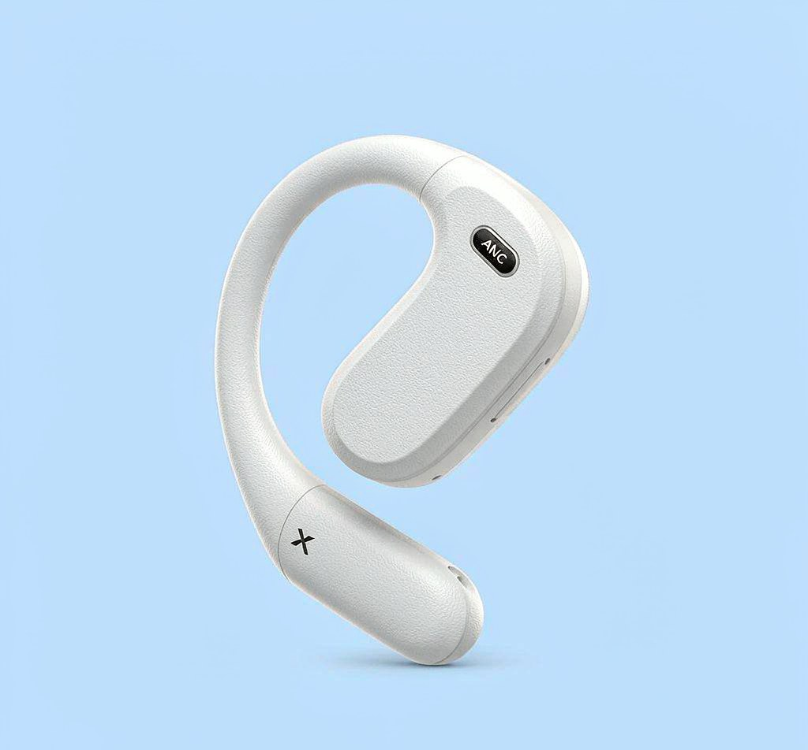
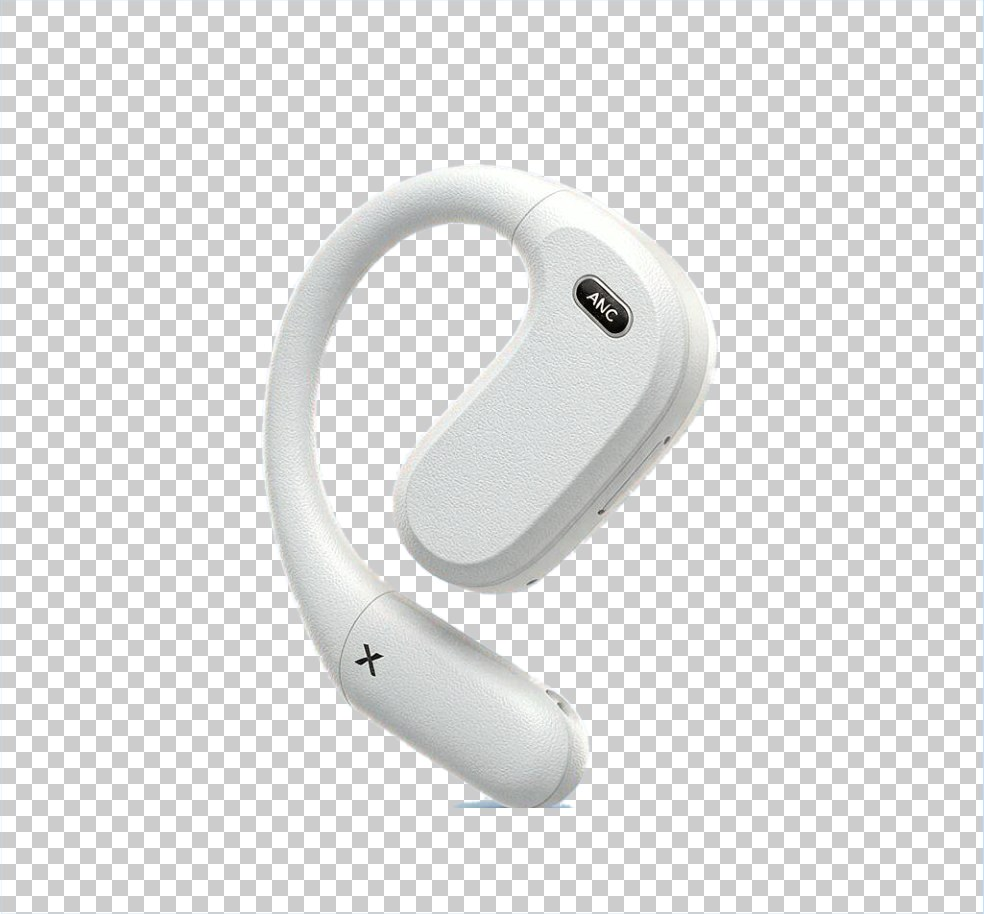
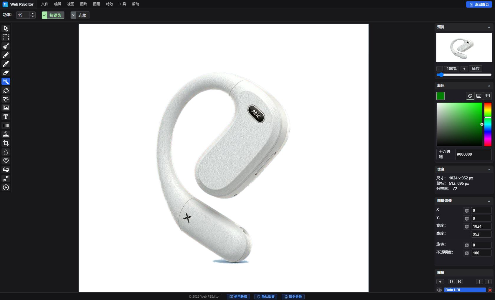

3 步在线抠图并导出透明底 PNG
抠图不是一个动作，是两个：把背景去掉，然后保证去掉的部分在导出后依然是去掉的。失败几乎都发生在第二步——画布上主体已经分离干净，导出的文件却又带回来一个白框。


这个编辑器有的三个工具
工具栏里没有套索，也没有多边形选区，对多数抠图来说够用了：
| 工具 | 适合什么 | 它实际做什么 |
|---|---|---|
| 魔术橡皮擦 | 纯色或近乎纯色的背景：商品图、棚拍人像、扫描件 | 把与你点击处颜色相近的像素变透明。功率即容差，默认 15。 |
| 选择工具 | 边缘方正、可以框住的物体 | 拖出矩形选区，再 【编辑】→【删除选区】 删掉框内像素。 |
| 橡皮擦 | 残余碎点、光晕、肩带边的最后一点背景 | 直接刷成透明。笔刷调小、放大画面，这是手工收尾。 |
把文件拖到画布上，或 【文件】→【打开】。确认右侧图层面板里选中的是这张照片——下面所有工具都只作用于选中的图层。
选魔术橡皮擦，在背景最平的地方点一下。与取样颜色在容差内的像素立刻变透明，画布透出的棋盘格就是成功的标志。
两个设置决定这一下是干净还是毁图。功率是颜色容差：默认 15 只吃掉几乎同色的像素，背景有明暗过渡时得提到 25 到 40 才能吃到暗角。Contiguous 默认关闭，意味着擦除不受连通区域限制，整个图层里同色的都会被清掉——白底商品图上正合适；如果主体本身含有和背景一样的颜色，它会直接在主体上打洞，所以点之前先看一眼主体，颜色撞了就先把功率降下来。

这个编辑器没有羽化命令，桌面软件里那种柔边只能手动做：
1. 保持魔术橡皮擦的抗锯齿开启，它本身就会把边界软化一像素，大致等于 1 px 羽化的效果。
2. 顽固光晕别靠调高功率，改成把功率降到 10 到 12 再点一次。提高容差会啃进主体，降低容差多点两次能保住边缘。
3. 换橡皮擦、小笔刷，在 200% 缩放下沿轮廓慢慢走。慢，但收头发、肩带、透明边缘只有这一条路。
4. 误删了一块，Ctrl + Z 能整体撤回——擦除是一次操作，不是一笔笔刷出来的。
【文件】→【导出】，选 PNG（或 WebP）。JPG 没有透明通道，编码时会把透明区域填成白色——这是「抠完导出又变白底」最常见的原因。工程还开着的时候，画布会一直显示棋盘格，正好把这个错误藏住，所以务必把导出的文件重新打开确认一次。
为什么头发和玻璃特别难
魔术橡皮擦靠颜色相似度工作，硬的边很好，软的边很糟。发丝上每一个像素都是主体色和背景色的混合：容差低到能保住发丝，就会留下一圈背景光晕；高到能清掉光晕，发丝就被吃掉。玻璃、烟雾、反光则是反过来的问题——你想去掉的那部分「背景」，恰恰是透过主体看见的。
这类主体现实的做法就是橡皮擦，小笔刷、200% 到 400%、短笔画贴着边走。花的是分钟而不是秒。如果这张图要印刷或者交给客户，这几分钟就是干净剪影和「每个尺寸都看得见毛边」的差别。
导出之前，检查这四件事
- 沿轮廓 200% 走一圈。 光晕在适应窗口下看不见，全尺寸下一眼就露。
- 垫一个深色背景。 临时加一层深色图层垫在下面，白边立刻显形。
- 重新打开导出的 PNG。 确认棋盘格还在，然后把临时图层删掉。
- 按用途命名。
headphones-cutout-2000px.png比最终版2.png有用得多，半年后你会感谢自己。
- 导出成 JPG——透明通道被丢弃，背景变白。请选 PNG 或 WebP。
- 导出前合并图层——并到不透明背景上，透明在写文件之前就没了。
- 为一个角落把功率拉满——能清掉角落的高容差同样会咬进主体。角落用低功率多点几次。
抠完之后，第一次用在哪决定成败
同一张抠图，放在白底上完美，放到深色卡片上立刻出现一圈浅色毛边——那是半透明的抗锯齿像素在白底上看不见、在暗底上变成了一圈亮边。所以验收不能只在编辑器里做：把抠好的图垫到目标背景上（深色卡片、彩色海报、深色 PPT 模板），看一眼边缘有没有出戏，再决定要不要回去补两笔橡皮擦。
另一个常见需求是缩放：抠出来的商品图要放在网页上，实际显示可能只有 300 像素宽。导出时按预期最大尺寸做，别按当前显示尺寸做——PNG 缩小是干净的，放大只会软。
常见问题 FAQ
为什么导出后背景又是白色的？
因为存成了 JPG。JPG 存不了透明，编码器会把透明通道填成白色——抠图本身没问题。工程还开着就重新导出 PNG 或 WebP；工程已经关了，只能重做，因为那张 JPEG 已经把空像素焊成白像素了。
功率（Power）该从多少开始？
干净棚拍背景用默认 15。背景有渐变或阴影时，以 5 为步长往上加，只在需要的地方加。超过 50 左右，橡皮擦开始把主体的中间调当背景吃。真需要更高，说明背景对一键抠图来说太不匀，改用橡皮擦更快。
商品底部的投影能留下吗？
能。用低功率点背景，只清掉平整的底色，看到投影就停。投影留在图层上，或者用选择工具框出来剪到新图层、降低那层的不透明度。留着渐变的投影看起来像放在了真实台面上，硬边投影一看就是贴上去的。
相关教程推荐
抠一张商品图，垫深色图层在 200% 下查光晕，然后导出 PNG 并重新打开确认。